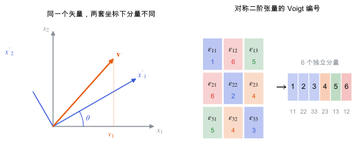

张量与坐标变换
张量在坐标变换下怎样变，Voigt 记号怎样压缩下标，以及晶体对称性怎样让一部分分量为零。
直观阅读需要
- 矢量的分量与基矢
- 矩阵乘法
完整推导还需要
- 正交矩阵
- 线性代数与本征问题
只是提示，不需要先读完才能往下看。
直觉直观解释
物理量本身不依赖坐标系，它的分量依赖坐标系。一根箭头（矢量）在旋转后的坐标系里，分量会变，箭头没变。张量就是“分量按某种固定规则随坐标系变化”的量：
- 0 阶：标量（能量、温度），分量不变；
- 1 阶：矢量（极化 P、电场 \mathcal{E}、力），3 个分量；
- 2 阶：介电张量 \varepsilon、应变 \eta、应力 \sigma，3\times 3 个分量；
- 3 阶：压电张量 d、e，3\times3\times3 个分量；
- 4 阶：弹性张量 C，3^{4} 个分量。
材料性质张量把一个张量“映射”到另一个：介电张量把电场映射到极化，压电张量把应力映射到极化。它们的阶数就是输入和输出阶数之和。

| 符号 | 是什么 | 图里对应 |
|---|---|---|
| x_1, x_2 | 原坐标轴 | 左图灰色轴 |
| x'_1, x'_2 | 旋转 \theta 后的坐标轴 | 左图蓝色轴 |
| \theta | 坐标旋转角 | 左图蓝色弧 |
| \mathbf{v}、v_1 | 一个矢量及其在原坐标下的第 1 个分量 | 左图橙色箭头和虚线 |
| \varepsilon_{ij} | 对称二阶张量（如应变）的分量 | 右图 3\times3 方格 |
| 1–6 | Voigt 编号 | 右图方格下方的小数字与右侧色条 |
定义与公式数学与推导
例如二维中绕 x_3 轴旋转 \theta：
R = \begin{pmatrix} \cos\theta & \sin\theta \\ -\sin\theta & \cos\theta \end{pmatrix}
其中第一行是新轴 x'_1 在旧坐标中的方向余弦，第二行是 x'_2 的方向余弦。
Voigt 记号
应变和应力是对称张量（\eta_{ij} = \eta_{ji}），只有 6 个独立分量。Voigt 记号把一对下标压成一个：
| 张量下标 | 11 | 22 | 33 | 23, 32 | 13, 31 | 12, 21 |
|---|---|---|---|---|---|---|
| Voigt 下标 | 1 | 2 | 3 | 4 | 5 | 6 |
于是压电张量 d_{ijk} 写成 3\times 6 矩阵 d_{iJ}，弹性张量 C_{ijkl} 写成 6\times 6 矩阵 C_{IJ}。
对称性怎样让分量为零
如果某个操作 R 把晶体变回自身，性质张量在这个变换下也必须不变：T' = T。这就是 Neumann 原理，它把一部分分量逼成零，或让几个分量相等。具体例子见 晶体对称性与空间群。
在本研究线里的样子对应与边界
- β-甘氨酸的 d_{16}：第 1 个下标是极化方向 x，第 6 个 Voigt 下标是 xy 剪切。只有把笛卡尔坐标和晶轴的对应说清楚，“d_{16}”才有确定含义（见 压电张量）。
- 从程序输出到论文：VASP 等程序输出张量时用自己的 Voigt 顺序和坐标约定。把结果和实验比较，或把单晶张量转到另一个坐标系（例如样品坐标），都要用上面的变换规则。
- 多晶或薄膜的有效系数：对取向分布做平均，本质上是对 R 做加权平均。
常见坑对应与边界
- Voigt 顺序不统一：有的程序剪切顺序是 xy, yz, zx，有的是 yz, xz, xy。
- 因子 2 用错：剪切分量差 2 倍或 4 倍，最常见于弹性常数 C_{44} 和压电剪切分量。
- 把 Voigt 矩阵当普通矩阵旋转：6\times6 的 C_{IJ} 不能直接用 R 旋转，要先展开成四阶张量，或用专门的 6\times6 变换矩阵。
- 左手坐标系：晶体学软件导出的笛卡尔坐标一般是右手系；手动建坐标时要检查，镜像会改变奇数阶张量的符号。
检验自己对应与边界
参考资料
官方文档IEEE Std 176
IEEE Standard on Piezoelectricity, ANSI/IEEE Std 176-1987
尚未实际查阅，目前只是拟查阅书目
分类数学工具 · 概念 · 状态：草稿